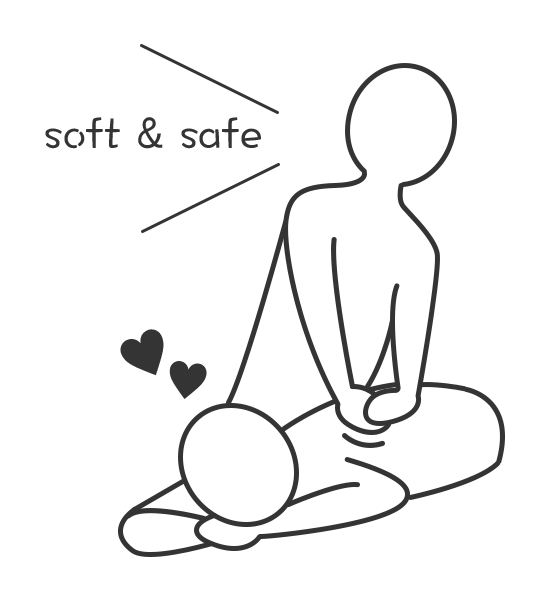
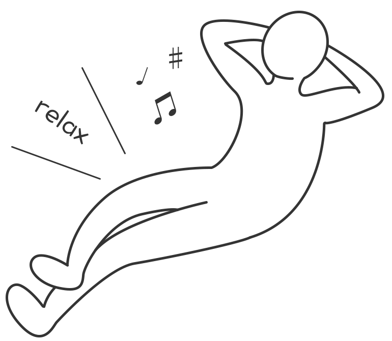

ヤマザキ整骨院では、手を使った手技による筋肉・骨格へのコンタクト、カイロプラクティックのテクニックによる骨盤・骨格矯正など、ボキボキせず安全で痛くない施術を行っています。
お客様それぞれの症状にマッチした施術、男女問わずお子様からご年配の方まで安心して受けられる施術を行っています。
HOME
＞
施術内容
施術内容
施術コンセプト
痛くない優しい施術

免疫力を高める施術

体の不調は「神経系」の働きが悪くなっていることが根本原因である場合が多く、その働きを本来の状態に戻すことで「自然治癒力」を最大限に発揮させることができます。
当院では、痛みや副作用の伴わない機器や施術により、筋肉・骨格を本来の正しい状態へ調整し、自然治癒力を引き出す施術を行います。
リラックスした状態での施術

お客様が心身ともに癒されるように、清潔で安らげる空間づくりを徹底しています。リラックスした状態で施術を受けていただくことで、ココロとカラダをストレスのない自然な状態に持っていき、症状改善を早める効果も期待できます。
施術紹介


【受付】 8:00-12:00 15:00-19:45
【休診】 日曜・祝日
【休診】 日曜・祝日